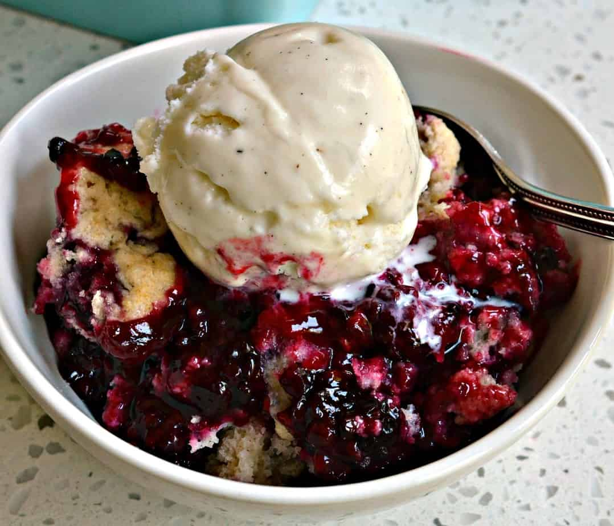

Blackberry Cobbler

Description
A classic desert dish that is easy and fast to make. Can be enjoyed by itself or made better by serving hot with a scoop of ice cream on top. Perfect to take to any gathering and it will be enjoyed by everyone.
Ingredients
- 1 cup all-purpose flour
- 1-1/2 cups white sugar
- 1 tsp baking powder
- 1/2 tsp salt
- 6 tbsp cold butter
- 1/4 cup boiling water
- 2 tbsp cornstarch
- 1/4 cup cold water
- 1 tbsp lemon juice
- 4 cups fresh, rinsed blackberries
Steps
- Preheat oven to 400F. Line baking sheet with aluminum foil
- In a large, mx the flour, 1/2 cup of sugar, baking powder, and salt. add butter until the mixture resembles coarse crumbs. Stir in 1/4 cup of boiling water until mixture is moist.
- In a separate bowl, dissolve the cornstarch in cold water. Mix in the remaining 1 cup sugar, lemon juice, and blackberries. Transfer to a cast iron skillet, and bring to boil while stirring frequently. Drop the dough into the skillet by the spoonful. Place the skillet on the lined baking sheet.
- Bake for 25 minutes until dough is golden brown.